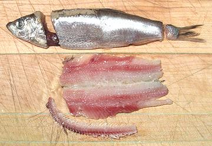

Kilka
[Kilka, Tyulka (Russ); Black Sea Sprat, Clupeonella cultriventris -
Similar: Anchovy Kilka, Anchovy Sprat (fb), Clupeonella
engrauliformis and (lesser importance) Bigeye Kilka, Southern
Caspian sprat, Clupeonella grimmi]
A member of the Herring family (Clupeidae), cultriventris
is a brackish to fresh water fish native to the Black, Azov and
northern Caspian Seas and nearby lakes and rivers, while grimmi
and engrauliformis live in central and southern Caspian only.
All can grow to just over 5-1/2 inches, engrauliformis a
little longer, and are major fish for canning in the region. I have
also seen some cans of Latvian Baltic sprats labeled Kilka, but that
isn't right. The photo specimen, which was salt pickled, was 5 inches
long and weighed 3/4 ounce. The largest in the batch was 6 inches and
weighed 1-1/8 ounces.
Caspian stocks have recently dropped 50% due to an American comb jelly
named Mnemiopsis leidyi eating all their food and the fishery is now
endangered. This also happened to the Black Sea but another American
jellyfish named Beroe ovata came allong and ate most of the
Mnemiopsis. This solution is likely to be applied in the Caspian.
Beroe eats only Mnemiopsis and disappears when they are
all eaten.
More on Herring Family.
Canned Kilka:
Kilka is mostly canned in oil or tomato
sauce or smoked and canned in oil. The major exporter is Iran, so you
aren't likely to see much of it in the U.S. until the current sword
rattling is a thing of the past.
Meanwhile some Latvian Baltic sprats are roasted and made up in tomato
sauce, and even labeled "Kilka". I've had them and they're quite edible.
Of course the bulk of sprats are smoked and canned in oil. These fish
are so closely related substitution is not a problem.

Salt Pickled Kilka:
This form is available in some
markets serving a Russian community - the photo specimen came from Jon's
Marketplace in Glendale CA. Salt pickled kilka are much like salt
pickled herring, just nearly an ounce, rather than nearly a pound.
Prep:
Like herring, salt pickled Kilka should be
soaked in water for some hours before eating or using in a recipe
to cut salt content. 6 hours should be fine, even less if you reduce
it to fillets.
Yield:
1-1/4 pound yielded 11-1/4 ounces of fillet
(55%).
Filleting:
You may wish to fillet this fish rather than
eat it "head guts and feathers", especially for use in recipes This is
easier than you might think. When doing this procedure it is fastest to
do one step on all the fish before going to the next step. I do the
filleting before soaking to reduce salt.
- Pull the fin out of the back.
- Cut off the tail.
- Behind the head cut downwards 2/3 of the way, then pull the head away
from the body. It will take some of the guts with it.
- Take your filleting knife and insert it into the body cavity from the
head end, all the way to the tail end and cut outward. This will open the
body and tear the hard keel loose.
- Rinse out the body cavity, removing any remaining guts and any parts
of the hard keel that remain attached.
- Set the fish on its back. Holding down the flesh on both sides of the
backbone, pull the backbone up, working from front to the back.
sf_kilkaz 080614 - www.clovegarden.com
©Andrew Grygus - agryg@clovegarden.com - Photos
on this page not otherwise credited © cg1
- Linking to and non-commercial use of this page permitted